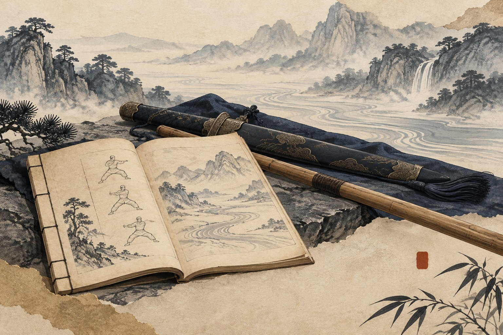

北派長拳
一寸長，一寸強。踢、打、拿、摔兼備，拳勢舒展大方，身法靈活多變。
功有所練・藝有所承
傳統武術的傳承，始於扎實的基本功，也落實於拳術、器械與攻防方法的反覆習練。本會重視方法的傳承，也重視習武過程中的品德、責任與修養。
身法、步法、腿法、勁力與基本動作，是拳術與器械習練的重要根基。由規矩入手，在反覆練習中建立身體能力與動作品質。
一寸長，一寸強。踢、打、拿、摔兼備，拳勢舒展大方，身法靈活多變。
手法靈活多變，長短兼施。攻防相應，象其形而不拘其形；取其意而用於攻防。
古樸無華，拳勢沉雄剛健。承載滄州鏢師與禁衛武藝的尚武遺風。
講究內外相合，由內而發於外。兼具內家功法與拳術實用，並蘊含五行相生相剋之理。
由基本持械、步法與單式開始，循序研習劍、刀、槍、棍、大刀、雙刀等傳統器械，理解器械與身法之間的關係。

以正氣立身，以武德修心；以基本功築基，以拳械磨藝。
習武不只在於動作與技藝，也包含分寸、責任、尊重與自我要求。技藝與品德並進，才能使傳統武術真正延續於當代。